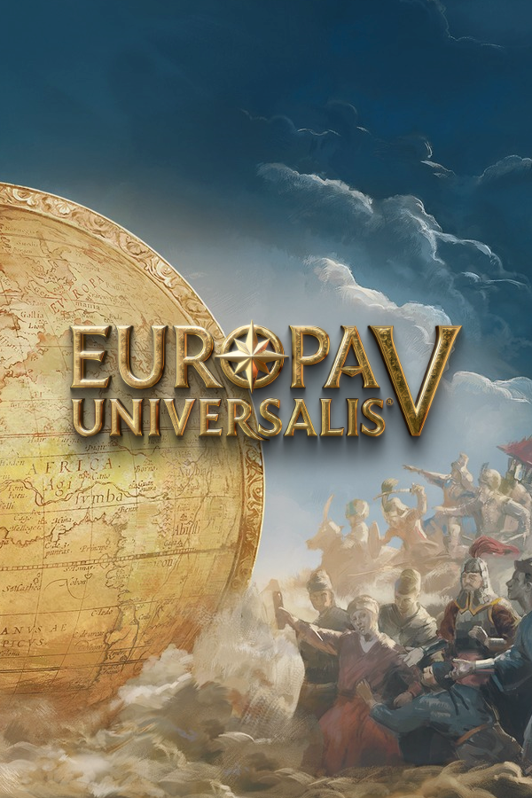

Game profile

Europa Universalis V
Every archived year-end list appearance, including placement and points earned.
About the Game
Almost five hundred years of history unfold before you in Europa Universalis V, the latest version of one of the greatest strategy games of all time. Guide the destiny of any of hundreds of nations and societies in a simulated living world of unparalleled depth and complexity.
| Released | 2025-11-04 |
|---|---|
| Developer | Paradox Tinto |
| Publisher | Paradox Interactive |
| Genres | Strategy |
| Platforms | PC |
SingleplayerMultiplayerSteam CloudOnline Co-OpSteam WorkshopPvPWarChoices Matter3DRealisticCinematicHistorical
Where to Buy
Game information provided by RAWG.
2List appearances
1Years represented
Points by Year
22025 points
List History
| Year | Source | List | Placement | Points |
|---|---|---|---|---|
| 2025 | Geeky Brummie | Top 50 Most Notable Games of 2025 | 44 | 1 |
| 2025 | NPR | The best games of 2025, picked by NPR's staff | Unranked | 1 |